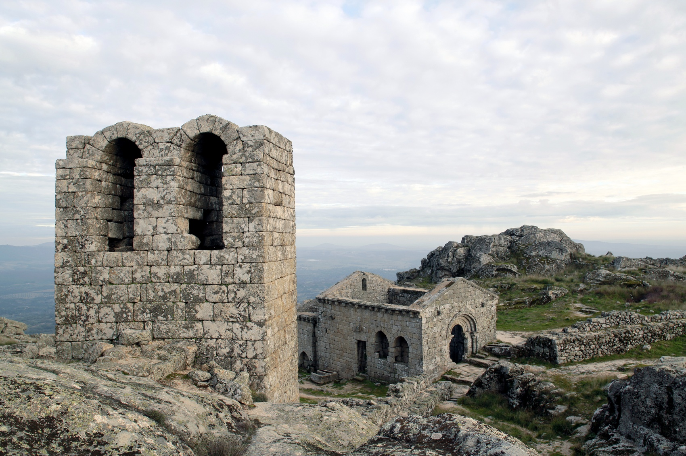
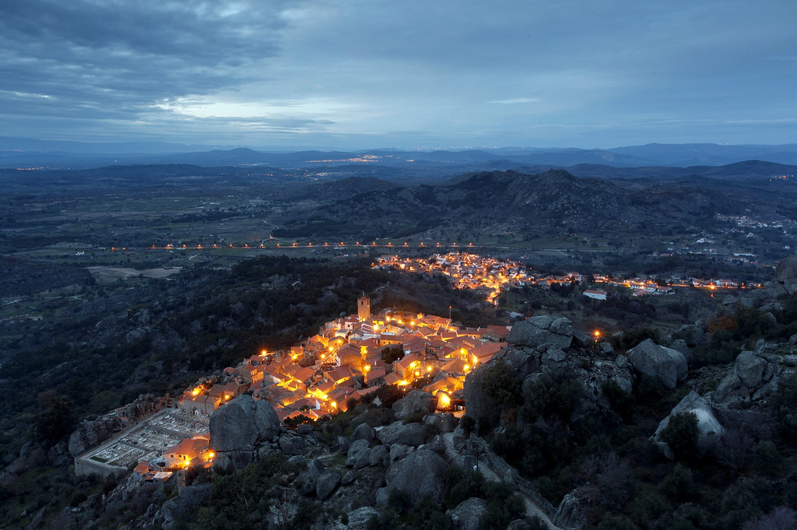
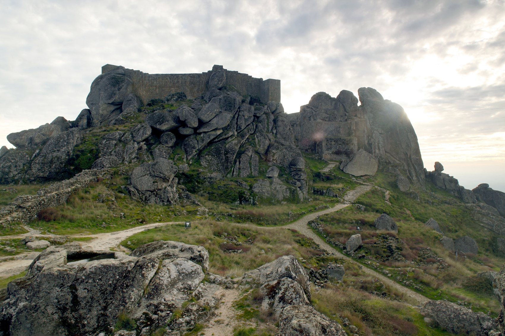
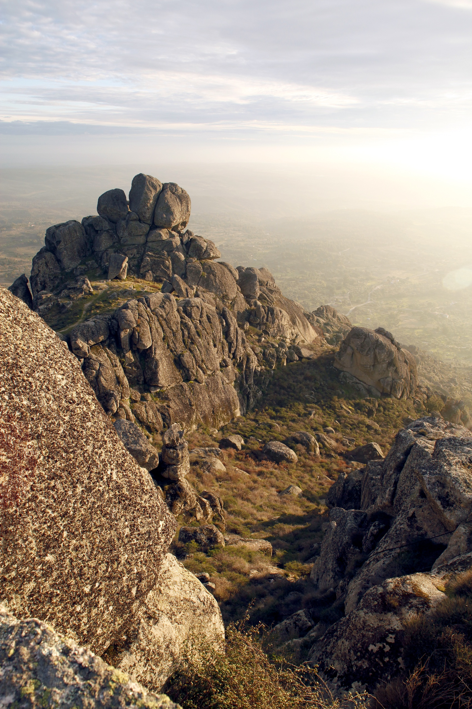

Monsanto
Sobre
Monsanto é uma das aldeias mais singulares de Portugal, famosa pelas habitações encaixadas entre enormes blocos de granito. Situada no topo de uma elevação, oferece vistas panorâmicas sobre a região envolvente. O castelo medieval, os caminhos escavados na rocha e o aspeto único da aldeia atraem visitantes de todo o mundo, tornando Monsanto um símbolo do turismo cultural e paisagístico português.

História

Monsanto situa-se a nordeste das Terras de Idanha, aninhada na encosta de uma elevação escarpada - o cabeço de Monsanto (Mons Sanctus) - que irrompe abruptamente na campina e que, no seu ponto mais elevado, atinge 758 metros. Pelas várias vertentes da encosta e no sopé do monte, existem lugarejos dispersos, atestando a deslocação populacional em direção à planície.
Trata-se de um local muito antigo, onde se regista a presença humana desde o paleolítico. Vestígios arqueológicos dão conta de um castro lusitano e da ocupação romana no denominado campo de S. Lourenço, no sopé do monte. Vestígios da permanência visigótica e árabe foram também encontrados.

D. Afonso Henriques conquista Monsanto aos Mouros e em 1165 faz a sua doação à Ordem dos Templários, que sob as ordens de D. Gualdim Pais, mandou edificar o Castelo. O primeiro Foral foi concedido por este rei em 1174, sucessivamente confirmado por D. Sancho I (1190) e D. Afonso II (1217). A D. Sancho I se deve também a repovoação e reedificação da fortaleza, desmantelada nas lutas contra Leão, novamente reparadas um século depois, pelos Templários. D. Dinis deu-lhe Carta de Feira em 1308, a realizar junto da ermida de S. Pedro de Vir-a-Corça. El-Rei D. Manuel I outorgou-lhe Foral Novo (1510) e deu-lhe a categoria de vila. Em meados do séc. XVII, D. Luís de Haro, ministro de Filipe IV, tenta o cerco a Monsanto, sem sucesso. Mais tarde, no início do século XVIII, o Duque de Berwick cerca também Monsanto, mas o exército português, comandado pelo Marquês de Minas, derrotou o invasor nos contrafortes da escarpada elevação.

Em 1758, Monsanto era sede de concelho, privilégio que manteve até 1853. No século XIX, o imponente Castelo medieval de Monsanto foi parcialmente destruído pela explosão acidental do paiol de munições.
Convida-se para uma visita ao que resta do poderoso Castelo na escarpada encosta onde se pode observar a alcáçova, a cintura de muralhas e torres de vigia, bem como as belíssimas ruínas da Capela de S. Miguel do séc. XII, e a Capela de Santa Maria do Castelo.

A gloriosa resistência aos invasores (romanos ou árabes - não se sabe bem) comemora-se na Festa de Santa Cruz, deitando-se das muralhas do castelo simbólicos cântaros com flores, levando as mulheres ao cimo das torres as tradicionais bonecas de trapos - as marafonas.
A Capela de S. Pedro de Vir-à-Corça ou Ver-a-Corça, Imóvel de Interesse Público, situada na base do monte nos arredores da povoação, entre os lugares de Eugénia e Carroqueiro, é um templo românico construído em granito, datando provavelmente do séc. XIII, em que se destaca uma rosácea. Em seu redor se realizava a feira autorizada por D. Dinis em 1308.
O que ver